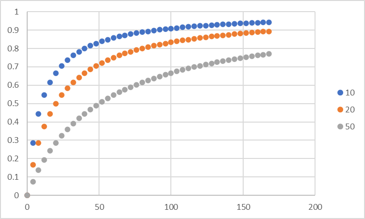

化学平衡論
基質の結合曲線
Aに基質，Lが結合し，Bとなる反応において，最大の傾きを考えます．
\( \Large \displaystyle P_B = \frac{[L]}{K + [L] } \)
\( \Large \displaystyle \frac{d \ P_B}{dL} = \frac{-[L]}{(K + [L])^2 } + \frac{[L]}{K + [L] } = \frac{K}{(K + [L])^2 } \)
\( \Large \displaystyle \frac{d^2 \ P_B}{dL^2} = \frac{-2 \cdot K \cdot [L] }{(K + [L])^3 } \)
となるので，[L]=0が最大の傾き．となります． その傾きは，
\( \Large \displaystyle \left. \frac{d \ P_B}{dL} \right|_{[L]=0} = \frac{K}{(K +0)^2 } = \frac{1}{K}\)
[L]=Kの時の傾きは，
\( \Large \displaystyle \left. \frac{d \ P_B}{dL} \right|_{[L]=K} = \frac{K}{(K +K)^2 } = \frac{1}{4K}\)
[L]=∞の時の傾きは，
\( \Large \displaystyle \left. \frac{d \ P_B}{dL} \right|_{[L]= \infty} = \frac{K}{(K + \infty )^2 } = 0 \)
図示すると，

となります．解離定数Kにより，急峻さが変化することがわかります．
しかし，実際の論文ではこのような表記で示すことはあまりなく，横軸（基質濃度）の常用対数表示となります．
次に，基質濃度を常用対数表示について検討します．